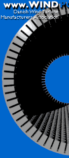
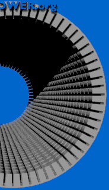
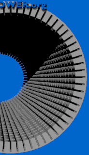

 Very
Like a Whale
Very
Like a Whale
In reality, the stator of a generator consists of a very large number of
electromagnets.
 

Changing the Number of Generator Poles
You may be thinking that a stator with twice as many magnets would be
twice as expensive, but that is not really the case. Generators (and motors)
are usually made with a very large number of stator magnets anyway, as you
see in the picture. (We have not yet added the stator coil windings on the
iron).
 The reason for this stator arrangement is that we wish to minimise the
air gap between the rotor and the stator. At the the same time we need to
provide cooling of the magnets. The stator iron in reality consists of a
large number of thin (0.5 mm) insulated steel sheets which are stacked to
form the stator iron. This layering is done to prevent current eddies in
the stator iron from decreasing the efficiency of the generator.
The reason for this stator arrangement is that we wish to minimise the
air gap between the rotor and the stator. At the the same time we need to
provide cooling of the magnets. The stator iron in reality consists of a
large number of thin (0.5 mm) insulated steel sheets which are stacked to
form the stator iron. This layering is done to prevent current eddies in
the stator iron from decreasing the efficiency of the generator.
 The problem of providing more generator poles on an asynchronous cage
wound generator then really boils down to connecting the neighbouring magnets
differently: Either we take a bunch of magnets at a time, connecting them
to the same phase as we move around the stator, or else we change to the
next phase every time we get to the next magnet.
The problem of providing more generator poles on an asynchronous cage
wound generator then really boils down to connecting the neighbouring magnets
differently: Either we take a bunch of magnets at a time, connecting them
to the same phase as we move around the stator, or else we change to the
next phase every time we get to the next magnet.
Two
Speed, Pole Changing Generators
Some manufacturers fit their turbines with two generators, a small one for
periods of low winds, and a large one for periods of high winds.
 A more common design on newer machines is pole changing generators,
i.e. generators which (depending on how their stator magnets are connected)
may run with a different number of poles, and thus a different rotational
speed.
A more common design on newer machines is pole changing generators,
i.e. generators which (depending on how their stator magnets are connected)
may run with a different number of poles, and thus a different rotational
speed.
 Some electrical generators are custom built as two-in-one, i.e. they
are able to run as e.g. either 150 kW or 600 kW generators, and at two different
speeds. This design has become ever more widespread throughout the industry.
Some electrical generators are custom built as two-in-one, i.e. they
are able to run as e.g. either 150 kW or 600 kW generators, and at two different
speeds. This design has become ever more widespread throughout the industry.
 Whether it is worthwhile to use a double generator or a higher number
of poles for low winds depends on the local wind
speed distribution, and the extra cost of the pole changing generator
compared to the price the turbine owner gets for the electricity. (You should
keep in mind that the energy content of low winds is very small).
Whether it is worthwhile to use a double generator or a higher number
of poles for low winds depends on the local wind
speed distribution, and the extra cost of the pole changing generator
compared to the price the turbine owner gets for the electricity. (You should
keep in mind that the energy content of low winds is very small).
 A good reason for having a dual generator system, however, is that you
may run your turbine at a lower rotational speed at low wind speeds. This
is both more efficient (aerodynamically), and it means less noise
from the rotor blades (which is usually only a problem at low wind
speeds).
A good reason for having a dual generator system, however, is that you
may run your turbine at a lower rotational speed at low wind speeds. This
is both more efficient (aerodynamically), and it means less noise
from the rotor blades (which is usually only a problem at low wind
speeds).
 Incidentally, you may have a few pole changing motors in your house
without even knowing it: Washing machines which can also spin dry clothes
usually have pole changing motors which are able to run at low speed for
washing and at high speed for spinning. Similarly, exhaust fans in your
kitchen may be built for two or three different speeds. (In the latter case
with a variable speed fan, you can use what you have learned about the energy in the wind: If you want to move twice
as much air out of your house per minute using the same fan, it will cost
you eight times as much electricity).
Incidentally, you may have a few pole changing motors in your house
without even knowing it: Washing machines which can also spin dry clothes
usually have pole changing motors which are able to run at low speed for
washing and at high speed for spinning. Similarly, exhaust fans in your
kitchen may be built for two or three different speeds. (In the latter case
with a variable speed fan, you can use what you have learned about the energy in the wind: If you want to move twice
as much air out of your house per minute using the same fan, it will cost
you eight times as much electricity).

|
Back | Home | Forward |
© Copyright 1998 Soren Krohn. All rights reserved.
Updated 6 August 2000
http://www.windpower.org/tour/wtrb/stator.htm